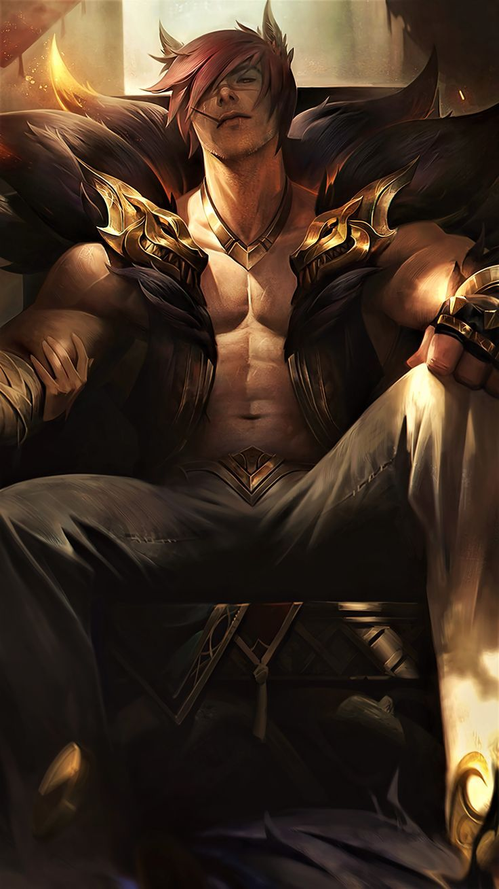

|  | BIOGRAFIA |
|---|---|
|
Sett é um lutador brutal de Ionia, filho de uma vastaya e de um humano que abandonou sua família.
Cresceu ouvindo histórias do pai, um famoso lutador de arenas ilegais — até descobrir que ele havia fugido.
Determinado a provar seu valor, Sett entrou para o submundo das lutas e rapidamente se tornou o campeão,
depois o chefe das arenas. Direto, orgulhoso e movido pela força bruta, Sett domina Ionia com seus punhos
e um senso rígido de respeito e lealdade. | |
| ARMAS | |
|
Os Próprios Punhos: Cada soco é pesado o suficiente para derrubar até os mais resistentes. Potência Bruta: Sua herança vastaya lhe dá força sobrenatural, resistência absurda e impacto destrutivo. | |
| Habilidades | |
|
Pancadão: Aplica socos seguidos — um rápido e outro extremamente forte. Casca Grossa: Aguenta muito dano e devolve parte dele em contra-ataques poderosos. O Grande Aluado: Pega o inimigo pela cara e o joga no chão com força explosiva, criando impacto em área. |